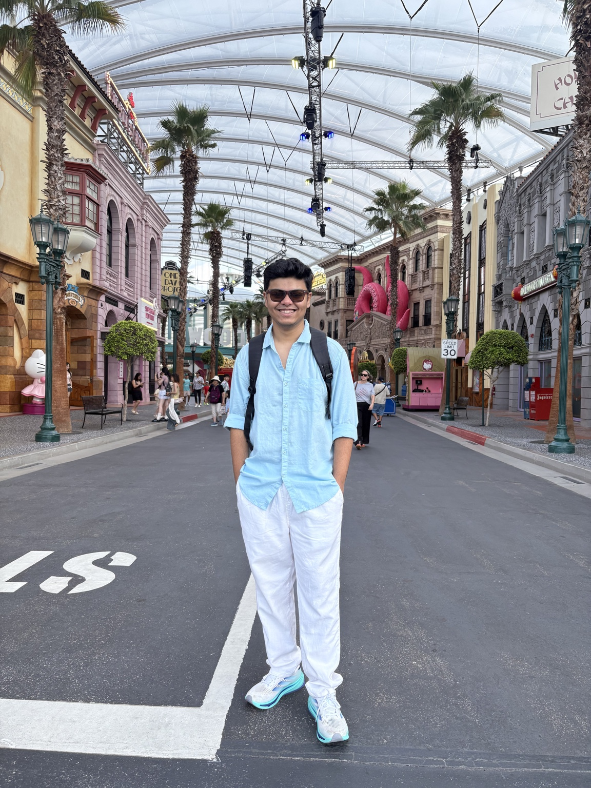
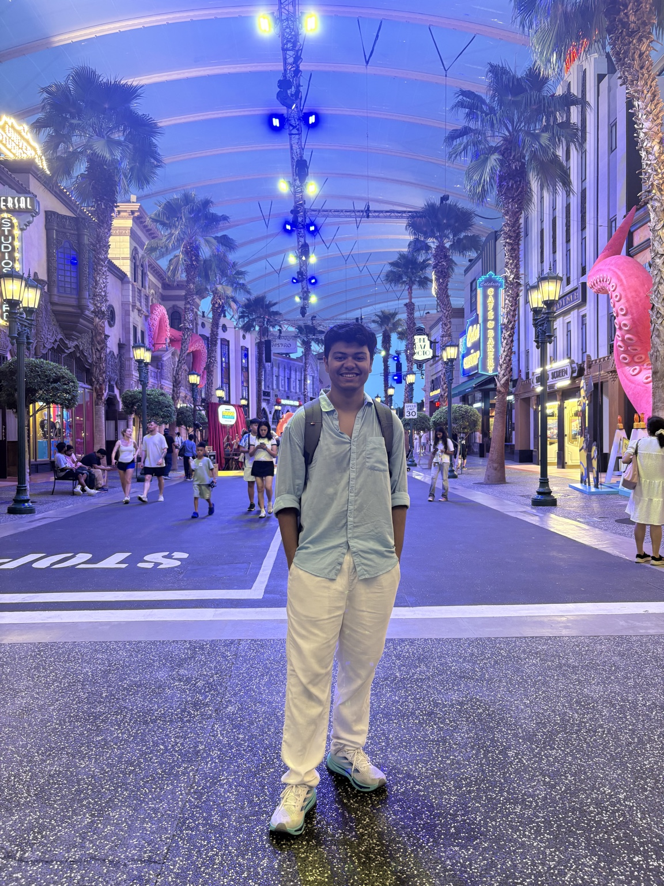

ROBOTICS · LEARNING · A LITTLE TRIAL & ERROR
hey, i'm medhansh.
I like making machines do things in the real world. Usually, that involves a camera, a robot, and a lot of figuring things out.
I'm an undergrad at VJTI, building with SRA in Mumbai. Currently drawn to robot learning, world models, and things that learn as they go.
explore my projectsanything shaped by one person’s taste is art.
what i build will be shaped by mine.